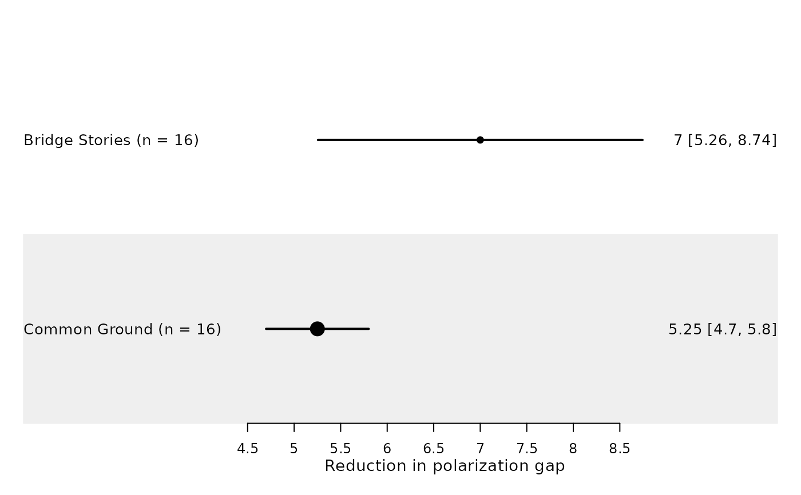

Create a forest plot of book-level polarization reduction effects
Source:R/plot_forest_books.R
plot_forest_books.RdGenerates a forest plot displaying mean reduction in affective polarization across books, including 95% confidence intervals.
Usage
plot_forest_books(
forest_df,
dv = "delta_gap",
add_ci_label = TRUE,
digits = 2,
label_cols = c("book"),
show_ci_label = TRUE,
ci_multiline = TRUE,
ci_show_party = FALSE,
show_legend = TRUE,
ci_label_fontsize = NULL,
ci_label_lineheight = 0.85,
header = NULL,
title = "",
xlab = "",
xticks = NULL,
xticks.digits = NULL,
zero = NA,
show_overall = TRUE,
ci.vertices = FALSE
)Arguments
- forest_df
Either:
A data frame produced by
prepare_forest_books()containingbook,mean,lower, andupper, orA summary data frame (for example from
summarize_chapter_scores(..., aggregate_level = "book")) withmean_{dv}andsd_{dv}columns.
- dv
Character. Variable prefix used when
forest_dfis not already prepared. Defaults to"delta_gap".- add_ci_label
Logical. Passed to
prepare_forest_books()when internal preparation is needed. Defaults toTRUE.- digits
Integer. Passed to
prepare_forest_books()when internal preparation is needed. Defaults to 2.- label_cols
Character vector of left-side label columns. Defaults to
"book".- show_ci_label
Logical. If TRUE, appends an internally generated
cilabel column to the right-side text.- ci_multiline
Logical. For grouped party output, print each party CI on its own line (using
\n) when TRUE.- ci_show_party
Logical. Include party names in CI labels.
- show_legend
Logical. Show party legend when grouped data are present.
- ci_label_fontsize
Optional numeric size for the CI label column. Useful when grouped party CIs are shown on multiple lines.
- ci_label_lineheight
Numeric line height for the CI label column when
ci_label_fontsizeis set.- header
Labels of the columns to be displayed and as specified in
label_cols.- title
Plot title
- xlab
X-axis label
- xticks
Optional numeric vector of x-axis tick positions. Defaults to
NULL, in which case readable pretty breaks are computed automatically.- xticks.digits
Integer number of digits for x-axis tick labels. Defaults to
NULL, in which case it is inferred from the tick positions.- zero
Numeric scalar, NA, or NULL. Reference line position for forestplot. Defaults to NA (no zero/reference line). NULL is treated as NA for convenience.
- show_overall
Logical. If TRUE (default), a vertical dashed line indicating the overall mean effect is added.
- ci.vertices
Logical. Whether to draw CI vertices in the forest plot.
Details
Books are ordered from strongest to weakest mean effect.
The plot uses circular markers for point estimates and displays 95% confidence intervals.
The vertical dashed line (if enabled) represents the average effect across books.
The temporary mean/lower/upper columns required by forestplot are
generated internally when needed.
If party is present, estimates are drawn as multiple CIs per book row
(one row per book; one estimate per party).
Examples
book_summary <- summarize_chapter_scores(
toy_sim_results,
aggregate_level = "book"
)
forest_df <- prepare_forest_books(book_summary, dv = "delta_gap")
plot_forest_books(
forest_df,
xlab = "Reduction in polarization gap",
show_overall = FALSE
)
